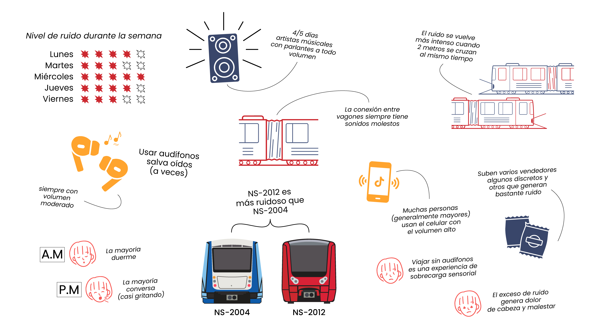

Horario punta y ruido
95% considera terribles el el horario punta por el ruido en el entorno.
El mapa muestra el nivel de ruido percibido en las estaciones de la Línea 2 del Metro de Santiago, usando colores para indicar si es bajo, medio o alto.
En esta ocasión solo está disponible la información de la Línea 2.
En ciertas estaciones encontrarás audios con el sonido ambiente grabado en el lugar
Personas encuestadas

Femenino, 18 a 29 años → 74 personas
Femenino, 30 a 45 años → 9 personas
Femenino, 46 a 65 años → 1 persona
Masculino, 18 a 29 años → 12 personas
Masculino, 30 a 45 años → 1 persona
No binarie, 18 a 29 años → 1 persona
El público que más se sumó a la encuesta fue principalmente femenino y juvenil
La gran mayoría (89%) afirmó que el ruido sí afecta su estado de ánimo, ya sea de forma constante (33%) o en ciertas ocasiones (56%).
El 63% de los encuestados señaló que los parlantes con música alta son lo más irritante durante un viaje
Es por esto que el 85% utiliza 🎧 para mitigar el ruido dentro del metro
95% considera terribles el el horario punta por el ruido en el entorno.
Mayor ruido = complicado conversar.
La gran mayoría (95%) afirma que es verdad.
¿Crees que existen más malestares? Puedes compartilos con nosotros en @estacionruido_cl
Cada viaje en metro está lleno de emociones: algunos buscan refugio con audífonos, otros muestran incomodidad… Esta imagen reúne las experiencias que compartimos día a día.

Somos un equipo de diseño e investigación comprometido con visibilizar cómo el ruido del metro de Santiago impacta en la vida de las personas. Nuestro proyecto nace desde la curiosidad y la experiencia cotidiana de viajar en la ciudad, donde el sonido se vuelve un acompañante constante, pero también un factor que influye en nuestro bienestar físico y emocional.
A través del diseño visual, la exploración sonora y la recopilación de experiencias reales, buscamos abrir un espacio de reflexión: ¿cómo suena tu viaje? Queremos que esta plataforma sea un lugar donde la comunidad pueda reconocer los efectos del ruido, compartir vivencias y repensar la forma en que habitamos el transporte público.
Creemos que hacer visible lo invisible —el ruido— es el primer paso para generar conciencia y, a futuro, inspirar cambios hacia una ciudad más amable y saludable.
Puedes encontrarnos en X como @EstacionRuido.
También pueden encontrarnos en instagram como @estacionruido_cl
El metro puede ser un lugar caótico y ruidoso, pero hay pequeños trucos para hacerlo más llevadero.

El ruido no tiene que arruinar tu viaje: unos audífonos y tu playlist favorita pueden hacer la diferencia.

Puede parecer inofensivo pero no pensamos en lo que el ruido puede hacer a nuestra salud

Escuchar esto todos los días puede afectar tu salud auditiva

Con solo elegir el llugar correcto, puedes reducir la exposición al ruido y hacer tu viaje mucho más cómodo

Cada viaje que hacemos está lleno de sonidos que no siempre notamos, pero afectan nuestro bienestar

El ruido siempre está, así que convierte tu viaje en un moemtno para disfrutar